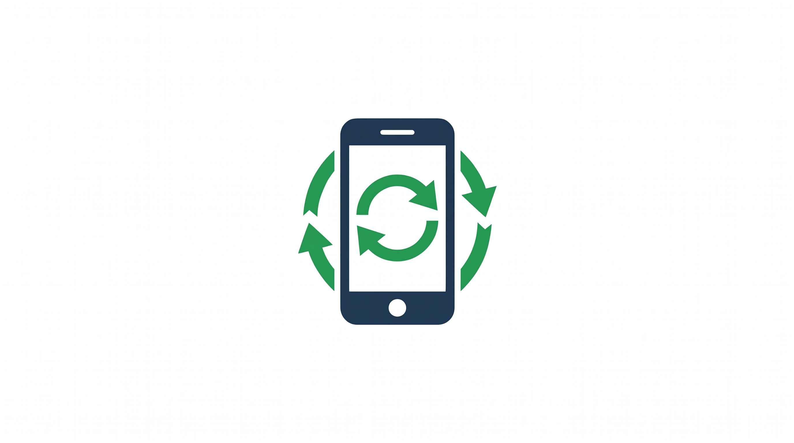

Os contamos un poco de nosotros, como empezamos y el por que decidimos abrir un negocio.
Somos un grupo de amigos apasionados por la electrónica y por el cacharrear como dice aquel.
Veíamos que mucha gente vendía sus teléfonos averiados por un precio asequible en internet, en sitios como Wallapop, Milanuncios y Vinted.
No todos son averiados, hay algunos que por falta de uso la gente los vende o deciden venderlos para cambiarse a otro modelo.
Decidimos aprovechar esas oportunidades de compra para darles un segundo uso a dichos dispositivos y así dejarlos operativos y que vuelvan utilizarse.
No siempre hay que tener el último modelo y según están los precios, no todo el mundo tiene acceso o quiere gastarse un dinero en un teléfono nuevo, de ahí
nace nuestra idea.